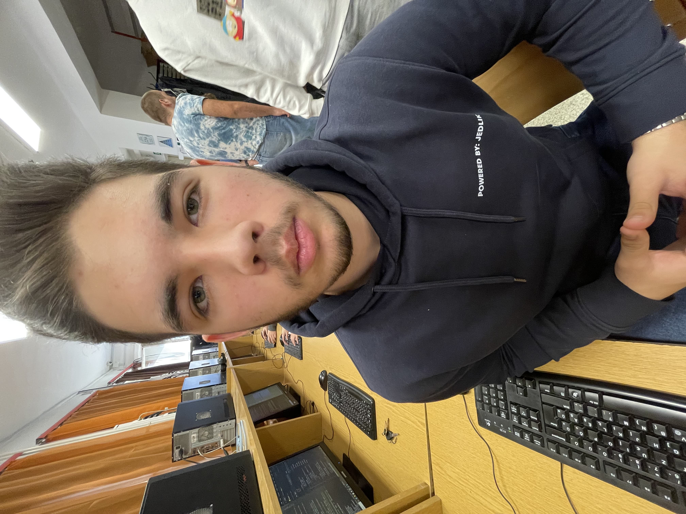
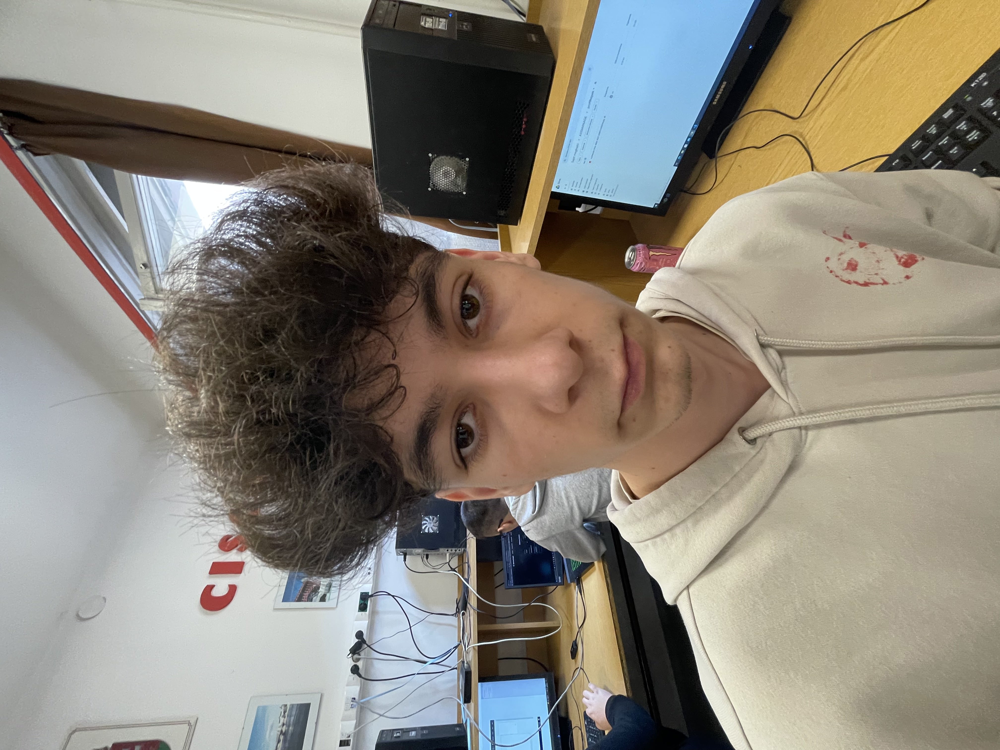

Csapatunk

Kövesdi Balázs
Prezentáló és Dokumentáló
.jpg)
Nagy Kende
Ügyvezető és Fejlesztő

Rigó Milán László
Webfejlesztő és helper
Ahol a tanulás többé nem nyűg, hanem közös siker!
A ClassMate azért jött létre, hogy áthidalja a szakadékot a segítséget kereső diákok, a gyermekükért aggódó szülők és a felkészült, lelkes korrepetálók között. Tudjuk, milyen kihívást jelent megtalálni a megfelelő oktatót, aki nemcsak érti a tantárgyat, de meg is találja a közös hangot a diákkal.
A platformunkon keresztül a szülők biztonságos és átlátható környezetben válogathatnak az ellenőrzött magántanárok között, míg a diákok személyre szabott, saját tempójukhoz igazodó támogatást kapnak. Legyen szó egy nehezebb dolgozatról, az érettségi felkészülésről vagy a tartós tanulási nehézségek áthidalásáról, a ClassMate segít megtalálni az ideális partnert a fejlődésben.

Prezentáló és Dokumentáló
Ügyvezető és Fejlesztő

Webfejlesztő és helper
Találd meg a diák igényeihez legjobban illő, ellenőrzött magántanárt!
Tanuljatok a saját időbeosztásotokban, online vagy személyesen!
Készüljetek fel a témazárókra és az érettségire a biztos jobb jegyekért!
Minden nálunk regisztráló korrepetáló profilját és végzettségét egyénileg ellenőrizzük, emellett a korábbi diákok és szülők értékelései is nyilvánosan megtekinthetők. Így garantáljuk, hogy kizárólag felkészült, megbízható és elhivatott oktatók közül választhattok.
Ez teljesen a ti igényeitektől és a kiválasztott oktatóval való megállapodástól függ: az órák megtarthatók online (videóhívásban), a diák otthonában, vagy akár egy előre egyeztetett külső helyszínen, például egy könyvtárban is.
Számunkra a legfontosabb a diák és a tanár közötti jó kapcsolat, ezért ha az első alkalom után úgy érzitek, nem passzol hozzátok az oktató stílusa, ügyfélszolgálatunk segít díjmentesen és zökkenőmentesen másik korrepetálót találni.